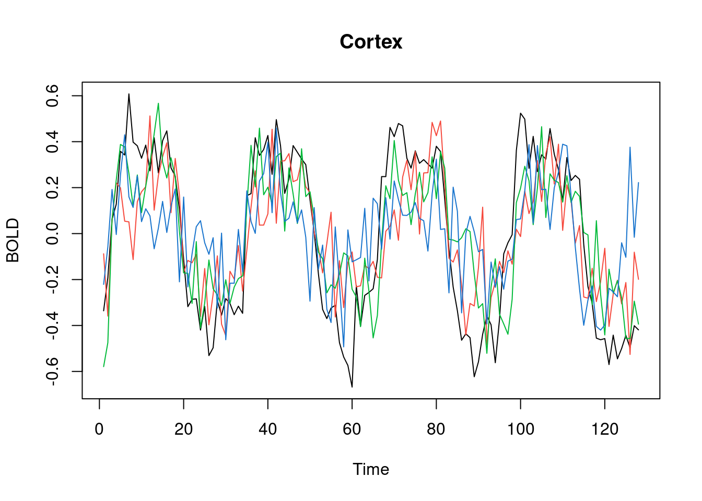
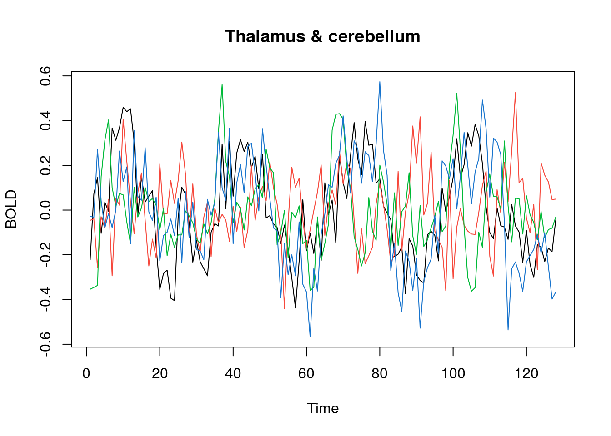
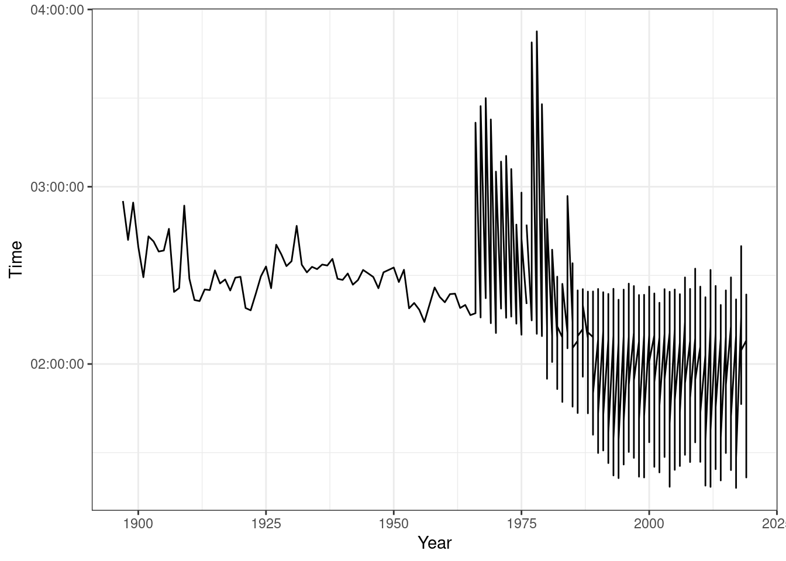
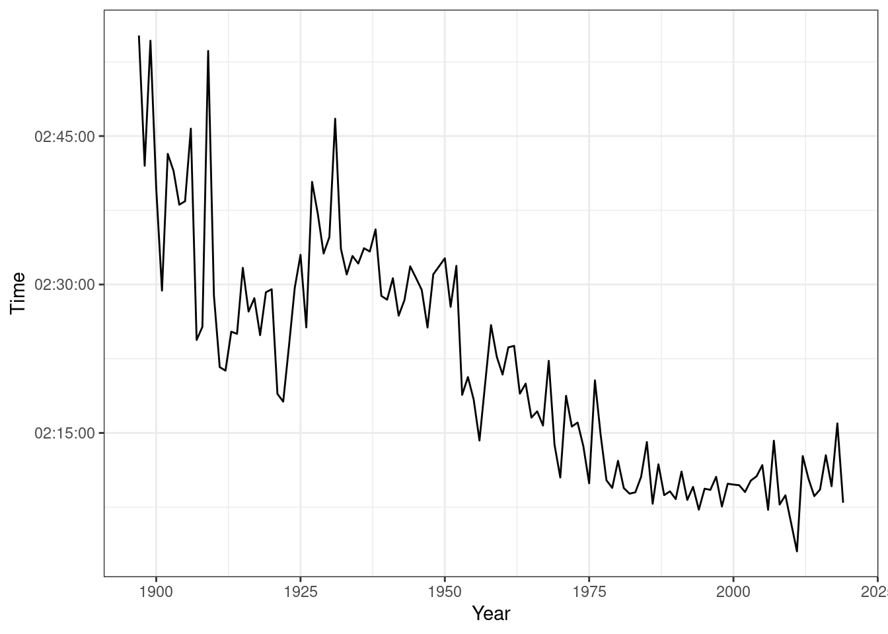
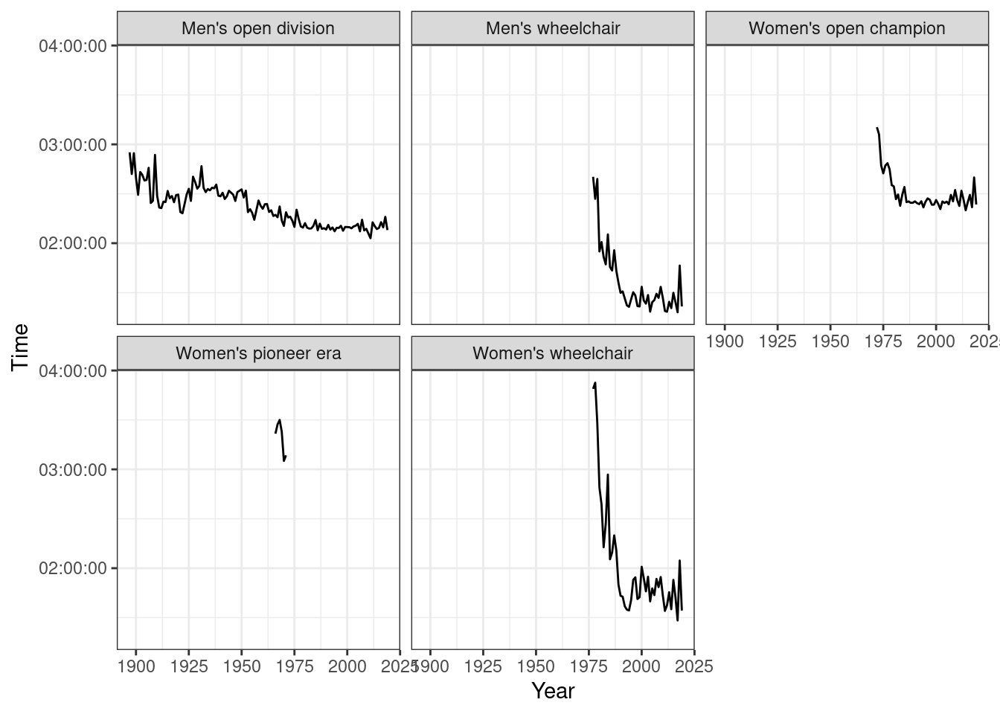
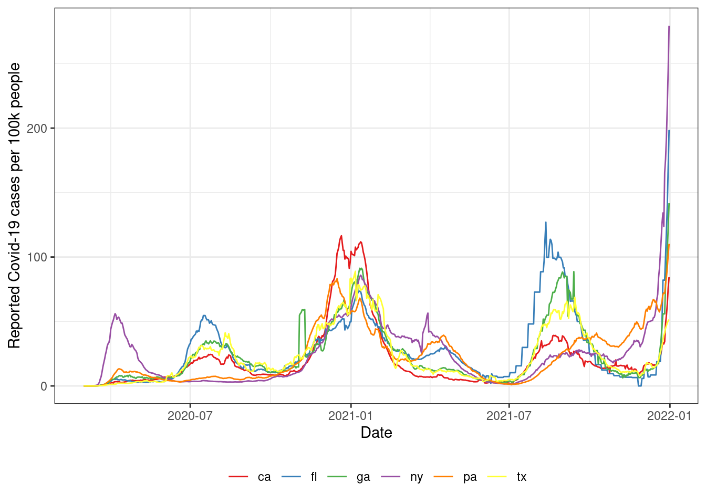
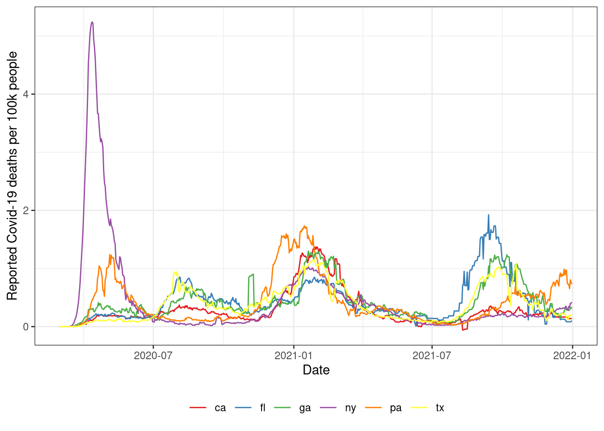
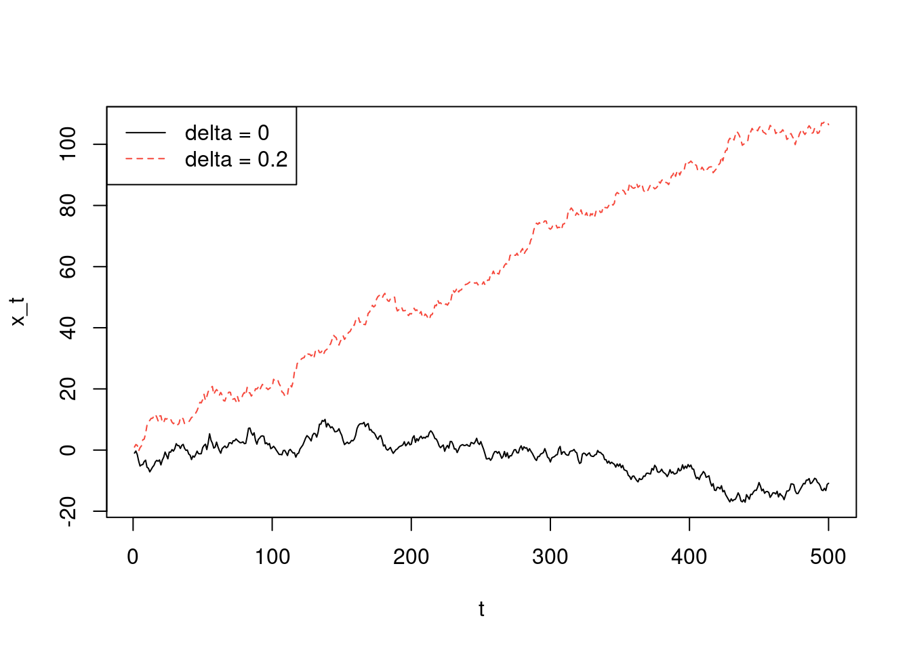
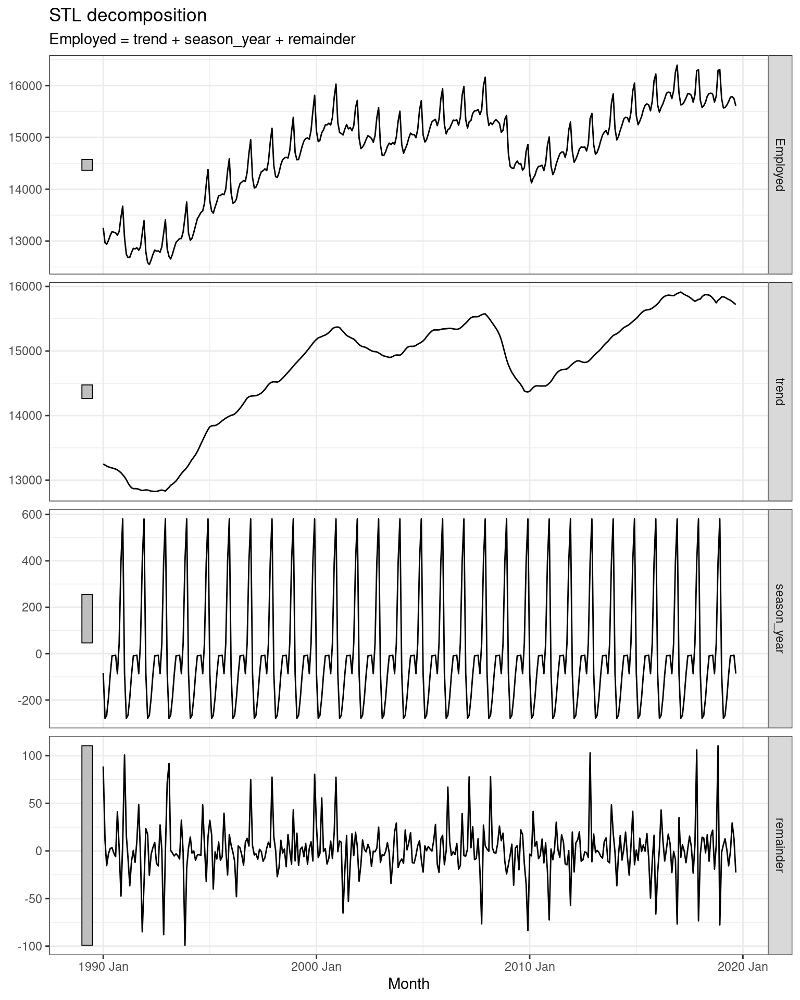

# The next few lines install packages that have data sets we'll frequently use
# in this course. You only need to install them once. For installing the third
# package, {epidatasets}, which is not yet up on CRAN, you'll need {devtools}
# install.packages("astsa") # From the Shumway and Stoffer book
# install.packages("fpp3") # From the Hyndman and Athanasopoulos book
# install.packages("tidyverse")
# install.packages("devtools")
# devtools::install_github("cmu-delphi/epidatasets") # From the CMU Delphi group
library(tidyverse)
library(astsa)
library(fpp3)
library(epidatasets)Lecture 1: Characteristics and Examples of Time Series Data
Load packages
Johnson & Johnson data
plot(jj, type = "o", ylab = "Quarterly earnings per share")Global warming data
plot(xglobtemp, type = "o", ylab = "Global temperature deviations")Speech data
plot(speech, type = "l", ylab = "Vocal response")fMRI data
matplot(fmri1[,2:5], type = "l", lty = 1, col = 1:4,
xlab = "Time", ylab = "BOLD", main = "Cortex")
matplot(fmri1[,6:9], type = "l", lty = 1, col = 1:4,
xlab = "Time", ylab = "BOLD", main = "Thalamus & cerebellum")
Boston marathon
boston_marathon |>
ggplot(aes(x = Year, y = Time)) +
geom_line() + theme_bw()
boston_marathon |>
filter(Event == "Men's open division") |>
ggplot(aes(x = Year, y = Time)) +
geom_line() + theme_bw()
boston_marathon |>
ggplot(aes(x = Year, y = Time)) +
geom_line() + theme_bw() +
facet_wrap(vars(Event))
Covid-19 data
cases_deaths_subset |>
ggplot(aes(x = time_value, y = case_rate_7d_av, group = geo_value)) +
geom_line(aes(color = geo_value)) +
labs(x = "Date", y = "Reported Covid-19 cases per 100k people") +
theme_bw() +
scale_color_brewer(palette = "Set1") +
guides(color = guide_legend(nrow = 1)) +
theme(legend.position = "bottom", legend.title = element_blank())
cases_deaths_subset |>
ggplot(aes(x = time_value, y = death_rate_7d_av, group = geo_value)) +
geom_line(aes(color = geo_value)) +
labs(x = "Date", y = "Reported Covid-19 deaths per 100k people") +
theme_bw() +
scale_color_brewer(palette = "Set1") +
guides(color = guide_legend(nrow = 1)) +
theme(legend.position = "bottom", legend.title = element_blank())
White noise
plot(rnorm(500), type = "l", xlab = "t", ylab = "x_t")Random walk
n = 500
delta = 0.2 # drift
x = cumsum(rnorm(n))
y = cumsum(rnorm(n) + delta)
matplot(cbind(x, y), type = "l", col = 1:2,
xlab = "t", ylab = "x_t")
legend("topleft", lty = 1:2, col = 1:2,
legend = paste("delta =", c(0, delta)))
STL decomposition
us_retail_employment <- us_employment |>
filter(year(Month) >= 1990, Title == "Retail Trade") |>
select(-Series_ID)
us_retail_employment |>
model(
STL(Employed ~ trend(window = 7) +
season(window = "periodic"),
robust = TRUE)) |>
components() |>
autoplot() + theme_bw()